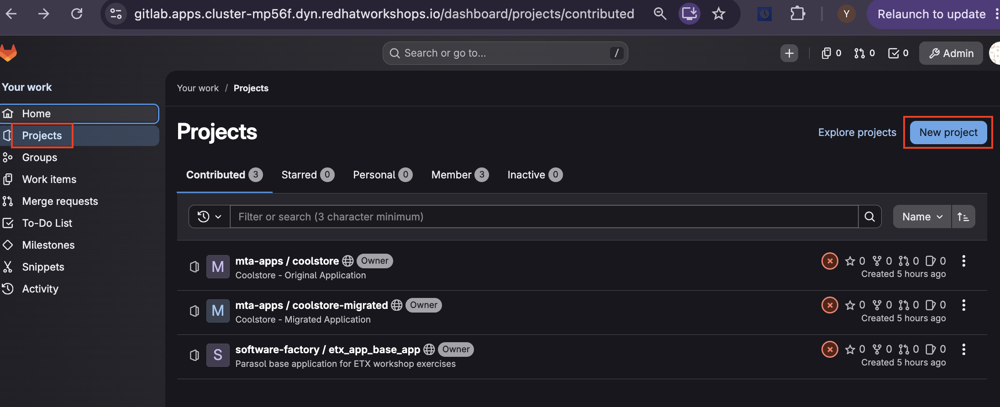
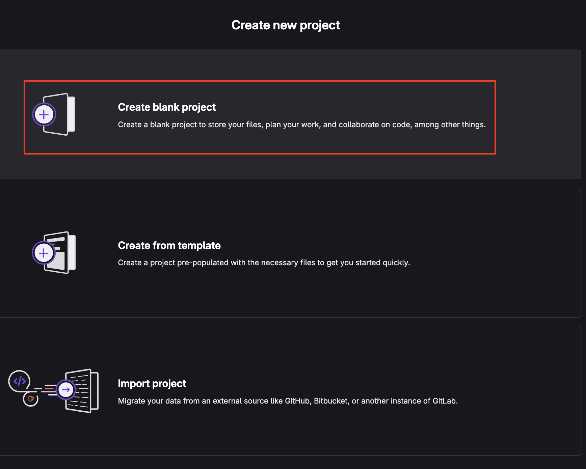
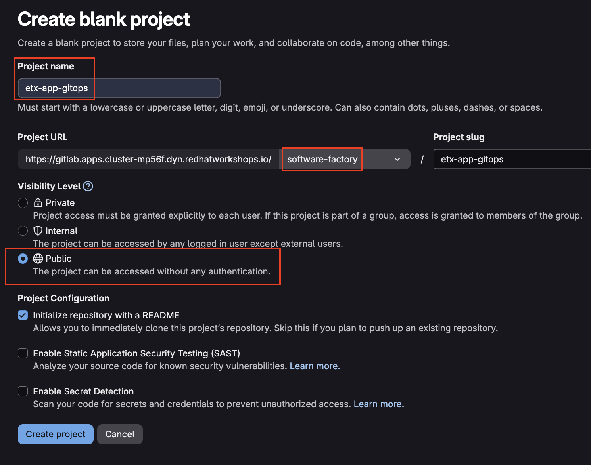

Lab 8: Create the GitOps Repository
In this lab, you’ll create a GitOps repository in GitLab to store the Kubernetes manifests that define your application deployment. This repository will serve as the source of truth that Argo CD continuously monitors and synchronizes with your OpenShift cluster.
By the end of this lab, you will have:
-
Created a GitOps repository in GitLab
-
Organized Kubernetes manifests for the development environment
-
Committed and pushed the initial application manifests
Create the GitOps Repository
In this exercise, you’ll create a new GitLab repository that will store the Kubernetes manifests used by Argo CD for GitOps-based application deployment.
-
Open a terminal in your OpenShift Dev Spaces workspace or launch the Web Terminal from the OpenShift console.
-
Retrieve the GitLab URL:
# Get GitLab URL GITLAB_URL="https://$(oc get route -n gitlab \ -l app=webservice \ -o jsonpath='{.items[0].spec.host}')" echo "GitLab URL: ${GITLAB_URL}" -
Open the displayed GitLab URL in your browser.
-
Create a new project named
etx-app-gitopsin thesoftware-factorygroup.


-
Clone the repository locally:
git clone ${GITLAB_URL}/software-factory/etx-app-gitops.git cd etx-app-gitops
The repository will use the following directory structure:
etx-app-gitops/ ├── environments/ │ ├── dev/ │ │ ├── namespace.yaml │ │ ├── deployment.yaml │ │ ├── service.yaml │ │ └── route.yaml │ └── stage/ │ ├── namespace.yaml │ ├── deployment.yaml │ ├── service.yaml │ └── route.yaml └── README.md
Create the Development Environment Manifests
Create the Kubernetes manifests that define the application’s development environment.
-
Create the directory structure and namespace manifest:
mkdir -p environments/dev cat > environments/dev/namespace.yaml <<'EOF' apiVersion: v1 kind: Namespace metadata: name: etx-app-dev EOF -
Create the Deployment manifest:
cat > environments/dev/deployment.yaml <<'EOF' apiVersion: apps/v1 kind: Deployment metadata: name: etx-app-base-app namespace: etx-app-dev labels: app: etx-app-base-app annotations: instrumentation.opentelemetry.io/inject-java: "true" spec: replicas: 1 selector: matchLabels: app: etx-app-base-app template: metadata: labels: app: etx-app-base-app annotations: instrumentation.opentelemetry.io/inject-java: "true" spec: containers: - name: etx-app-base-app image: image-registry.openshift-image-registry.svc:5000/etx-app-dev/etx-app-base-app:latest ports: - containerPort: 8080 resources: requests: cpu: 250m memory: 512Mi limits: cpu: "1" memory: 1Gi EOF
| The OpenTelemetry annotation automatically injects the Java agent using the Instrumentation custom resource created during the supporting services setup. |
| The container image tag is updated automatically by the CI pipeline after a successful build. |
-
Create the Service manifest:
cat > environments/dev/service.yaml <<'EOF' apiVersion: v1 kind: Service metadata: name: etx-app-base-app namespace: etx-app-dev spec: selector: app: etx-app-base-app ports: - port: 8080 targetPort: 8080 EOF -
Create the Route manifest:
cat > environments/dev/route.yaml <<'EOF' apiVersion: route.openshift.io/v1 kind: Route metadata: name: etx-app-base-app namespace: etx-app-dev spec: to: kind: Service name: etx-app-base-app port: targetPort: 8080 tls: termination: edge EOF
Commit the Initial Manifests
Commit the development environment manifests and push them to the GitOps repository.
-
Configure your Git identity:
git config --global user.email "platform-developer@example.com" git config --global user.name "Platform Developer" -
Retrieve the GitLab administrator credentials:
GITLAB_ROOT_PASSWORD=$(oc get secret \ -n gitlab \ gitlab-gitlab-initial-root-password \ -o jsonpath='{.data.password}' | base64 -d) echo "Root Username: root" echo "Root Password: ${GITLAB_ROOT_PASSWORD}" -
Commit and push the manifests:
git add environments/dev/ git commit -m "feat: add dev environment manifests" git push origin main
Once the changes are pushed, the GitOps repository contains the Kubernetes manifests that Argo CD will use as the desired state for the development environment in the following labs.